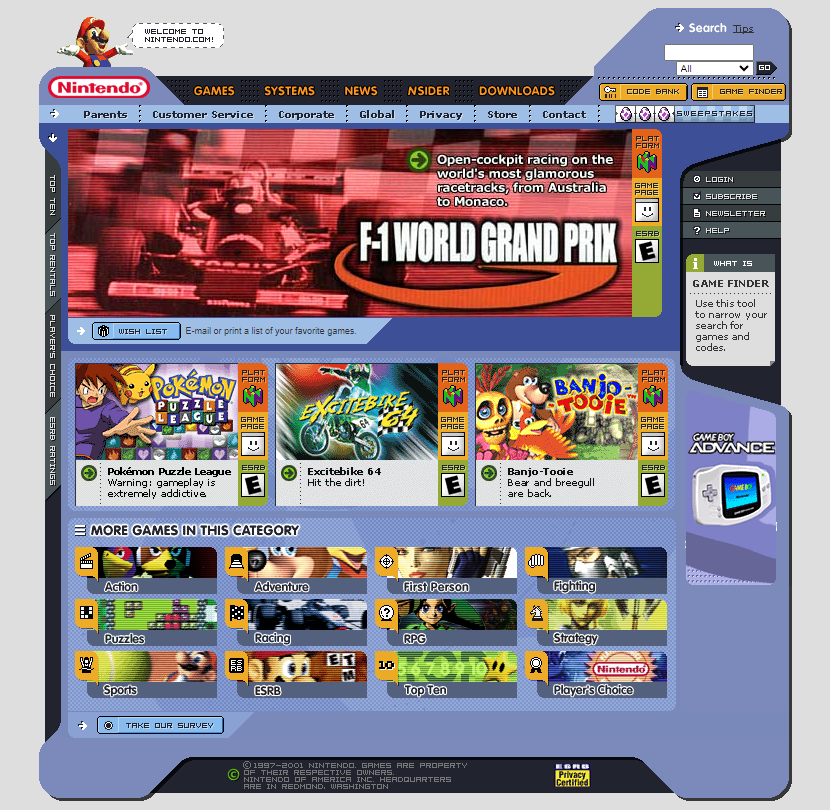
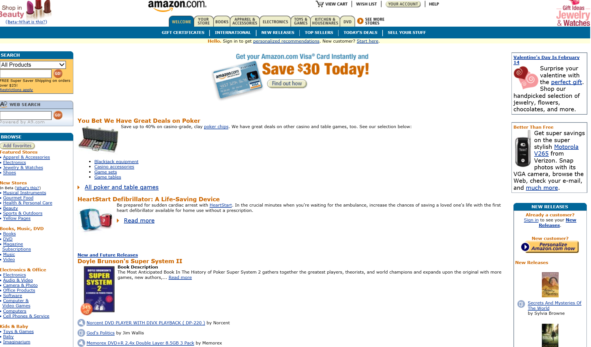
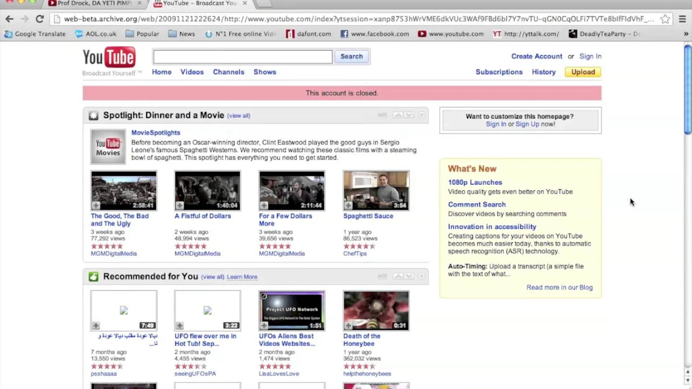

As someone who fondly remembers the internet in the early 2010s, I feel that the modern internet just totally pales in comparison to what it once was.
And idk if I'm alone on this, but have you ever at least seen even like pictures of websites from the 2000s? They looked so much more entertaining, friendly, and interesting. Many people refer to these designs as Frutiger Aero.
Censorship was never an issue because there was thousands of forums that you could go on to talk about even the most niche of topics like specific games or tutorials on how to do certain things.
The internet wasn't so intrusive either. No one was harvesting all of your data or information and selling it to the highest bidder. You could click on any site without needing an account, it The Free Internet.
Most of the internet had a very interesting quality based around creation or so one could say production. But what happened? What led to a dumbed down and bleak design of the internet? Where did the charm and adventure go?
When the iPhone dropped back in 07 it was like revolutionary and very pleasing to look at. And as cute as it seemed, I think that the smartphones were the beginning of the end.
Before, to use the internet, you needed a computer. So you were likely home, or perhaps at the library, or in school. But the point being is that you needed to have some time to sit down and invest yourself into it.
With phones, you can access the web at any time. This led to 3 big changes.
Briefly explaining, on a computer, people would create websites, blogs, videos, do work, send emails, or whatever else they wanted. Phones turned the internet into a place to just watch what other people did.
It led to watching "shorts", doomscrolling, the increase rise in social media usage led to bots, and phones carry way more personal information for data brokers than computers.
Most of the internet today is just a handful of companies that people use their apps or websites for.
Many of the other services that people used are owned by one of these giants. Like Google owns YouTube, Facebook owns Instagram, and Amazon hosts web servers for a lot of other sites.
There is no more diversity or competition on the web. It's the same sites for everything, which allows them to dictate a lot of things from practice and standards that tech companies have to design trends and changes.
Need to look up something? Use Google. Wanna watch a video? Go on YouTube. Wanna buy something? Go on Amazon. Wanna talk about something niche? There's tons of forums on Reddit.
It's funny because once upon a time the internet actually had good government regulations slapped on it.
Like in the 2000s there was a literal anti-trust lawsuit filed against Microsoft by the United States Government.
The reason being that Microsoft had their own services and software as the default on so many computers because Windows dominated, which made it hard for competition to have a chance when their software dominates all computer manufacturers.
Actual good quality regulations would never happen now (at least in America) when big tech lines up the pockets of politicians, and big tech prioritizes their shareholders.
I feel like there's so much wrong that I wouldn't even know how to start or where anyone could begin.
We need more meaningful competition, however that would be achieved. It's not the total end of the world though. There are still niche sites that people use like Mastodon or different image boards. Some people could always have their own sites too I suppose lol.

Return to main page